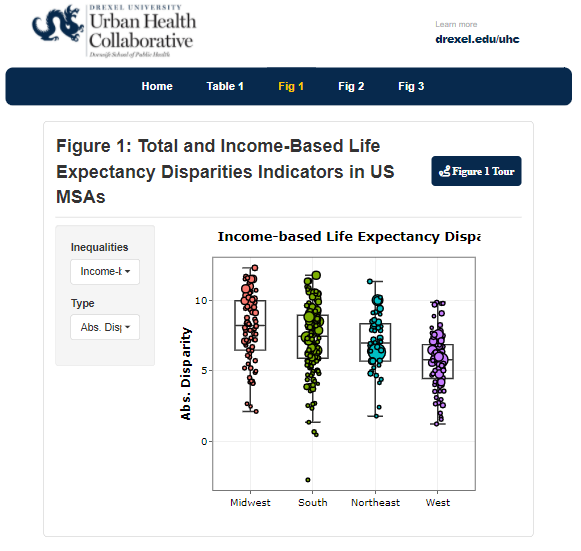

Interactive tools and applications that empower users to explore data
and make decisions.
All Tools
Tags
Shiny
Quarto
Javascript
Tableau
ESRI
Manuscript Supp.
Internal Tools
Organizations
UHC
SALURBAL
BCHC
Mapping Spatial Social Polarization
Feb 2024
Explore the index of concentration at the extremes, a common measure of spatial social polarization. Filter by geographical scale, metric, and location and explore using an interactive map and chart. Filtered data is downloadable as CSV, shapefile, or GeoJSON.
Heterogeneity in Disparities in Life Expectancy across US Metropolitan
Areas
This article highlights key disparities in life expectancy in US MSAs.
This app does two things: 1) translates the article figures into
interactive visualizations, allowing more granular exploration of the
article analysis, and 2) extends scope of the data visualized to
include all US MSAs.
Nov, 2022

Big Cities Health Inventory
The Big Cities Health Inventory (BCHI) is the Big Cities Health Coalition’s open-access data platform. Today,
more than 80% of the U.S. population live in metropolitan areas. There is a clear need for city-level data to
understand and inform a city’s health and ensure that programs are equitable and responsive to a city’s health
needs. The BCHI provides a baseline of health in urban communities, and time trends can be used to explore
patterns in the data that may point to the effectiveness of policies and practices at work in Big Cities Health
Coalition’s member jurisdictions.
City-level impact of extreme temperatures and mortality in Latin America
This app translates figures and results from Kephart et al. (2022, Nature Medicine) into interactive
visualizations, allowing more granular exploration of the article analysis.
Javascript based interactive vizualizations can be included in basic
HTML pages. This blog shows JS viz from the BCHC COVID-19 Dashboard in
a blog post.
Compare, and track inequities along three dimensions (1) across
subgroups of individuals within cities; (2) across neighborhoods
within cities, and (3) across cities.
Developed by the Drexel Urban Health Collaborative in collaboration
with a team from the Philadelphia Department of Public Health and Fox
Chase Cancer Center, this interactive data tool explores cancer,
cancer screening and select cancer risk factors in the neighborhoods
of Philadelphia. The goal of this report is to allow residents to
learn more about cancer risk factors and outcomes in their
neighborhood.
Life Expectancy and Mortality Profiles in Latin American Cities
This app provides extra information and data on the manuscript
entitled Life expectancy and mortality in 363 cities of Latin America:
the SALURBAL project
The goal of this report is to identify and characterize disparities in
cancer incidence and mortality, uses of cancer screening, and select
cancer risk factors in Philadelphia between 2000-2018. The ultimate
purpose is to use this information to motivate and support programs
and policies aimed at reducing cancer risks and disparities.
In response to the COVID-19 pandemic, the Drexel West Philly Promise
Neighborhood team has built data dashboards to help to identify areas
in Philadelphia that are at highest risk for COVID-19 and its
longer-term impacts.
The online dashboard developed by the SALURBAL project allows visitors
to plot trends of COVID-19 cases and deaths as well as to map these
outcomes at various geographic levels: country, city, and sub-city in
Latin American countries and compare the progress of the pandemic
across countries.
Interactive documents and visualizations can be effective
communication tools for more complex data issues. This examples uses
JS tables and plots to highlight abnormalities in data during quality
checking.
This tool examines how to quantify the contributions of city-level
Built Environment (BE) factors to differences in levels of health and
health inequalities within and between cities.
As part of the BEPIDL study, this data tool provides histogram and spatial distribution of the
neighborhood-level indicators for the built environment in Bogotá, Colombia.
Progress in Built Environment, Pedestrian Injuries and Deep Learning Study
Blog posts on data cleaning, visualization and analyses/modeling from the Built Environment, Pedestrian Injuries
and Deep Learning Study. (Work in progress, aiming to make it more story-oriented.)
This goal of this app is to provide an accessible tool to examine how
policy effects health outcomes. This is still being developed and
currently is only displaying simulated data.